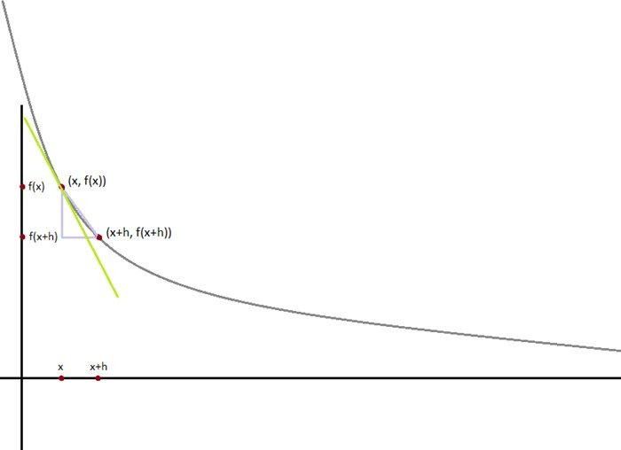
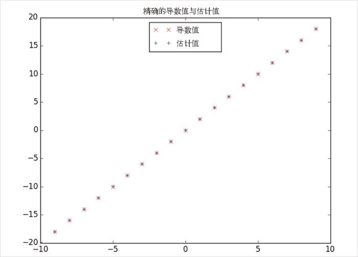

“差商估算法”的主要缺点是计算代价很大。如果 v 长度为 n ，那么 estimate_gradient 为了计算 f 需要 2n 个不同的输入变量。如果你需要反复计算梯度，那需要做很多额外的工作。
“差商估算法”的主要缺点是计算代价很大。如果 v 长度为 n ，那么 estimate_gradient 为了计算 f 需要 2n 个不同的输入变量。如果你需要反复计算梯度，那需要做很多额外的工作。8.2 估算梯度
如果 f 是单变量函数，那么它在 x 点的导数衡量了当 x 发生变化时，f(x) 变化了多少。导数通过差商的极限来定义：
def difference_quotient(f, x, h):
return (f(x + h) - f(x)) / h
其中 h 趋近于 0。
（许多微积分初学者常常受困于极限的数学定义。这里我们不妨说，你认为它是什么，它就是什么。）

图 8-2：通过差商来求近似导数
导数就是在点 (x , f (x )) 的切线的斜率，而差商就是通过点 (x , f (x )) 和点 (x +h , f (x +h )) 的割 线的斜率。当 h 越来越小，割线与切线就越来越接近（见图 8-2）。
很多函数可以精确地计算导数，比如平方函数 square ：
def square(x):
return x * x
它的导数为：
def derivative(x):
return 2 * x
你可以通过计算来确认——如果你想的话——先显式地计算差商，再取极限。
如果算不出梯度（或不想算）呢？ Python 中无法直接运算极限，但可以通过计算一个很小的变动 e 的差商来估算微分。图 8-3 给出了这个估算的结果：
derivative_estimate = partial(difference_quotient, square, h=0.00001)
# 绘出导入matplotlib.pyplot作为plt的基本相同的形态
x = range(-10,10)
plt.title("精确的导数值与估计值")
plt.plot(x, map(derivative, x), 'rx', label='Actual') # 用 x 表示
plt.plot(x, map(derivative_estimate, x), 'b+', label='Estimate') # 用 + 表示
plt.legend(loc=9)
plt.show()

图 8-3：差商近似值的拟合度
当 f 是一个多变量函数时，它有多个偏导数，每个偏导数表示仅有一个输入变量发生微小变化时函数 f 的变化。
我们把导数看成是其第 i 个变量的函数，其他变量保持不变，以此来计算它第 i 个偏导数：
def partial_difference_quotient(f, v, i, h):
"""compute the ith partial difference quotient of f at v"""
w = [v_j + (h if j == i else 0) # 只对v的第i个元素增加h
for j, v_j in enumerate(v)]
return (f(w) - f(v)) / h
再以同样的方法估算它的梯度函数：
def estimate_gradient(f, v, h=0.00001):
return [partial_difference_quotient(f, v, i, h)
for i, _ in enumerate(v)]